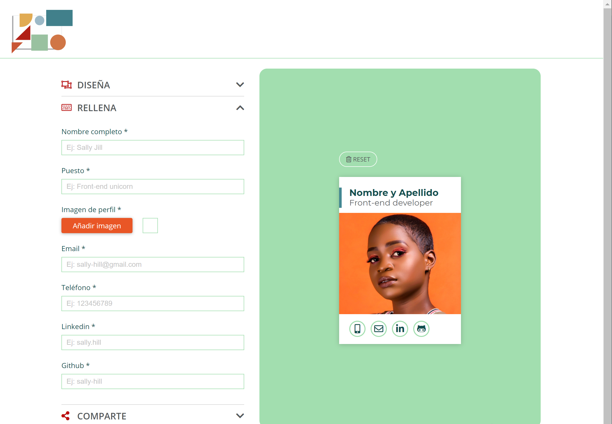

-
API Painters

React App to create your own business card online and share it with the
world
-
Shows search

Shows finder in Vanilla Javascript with local storage and favorites
section
-
Sense 5

Landing and contact page of team work with two faces... with HTML5 and
CSS3